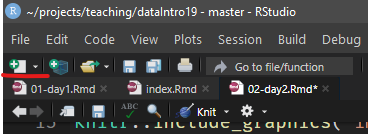
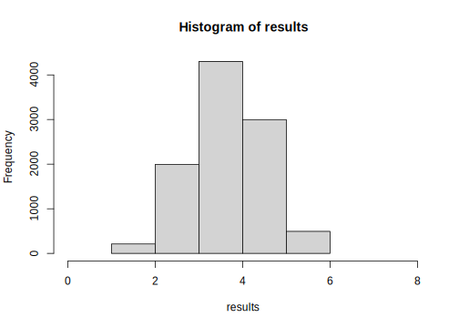
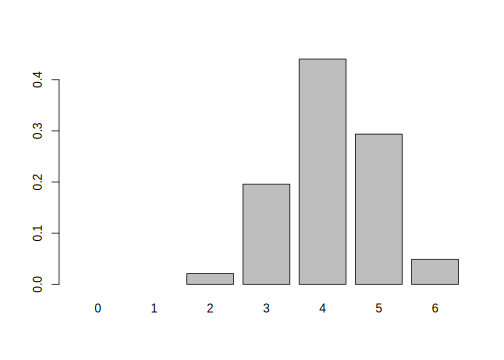
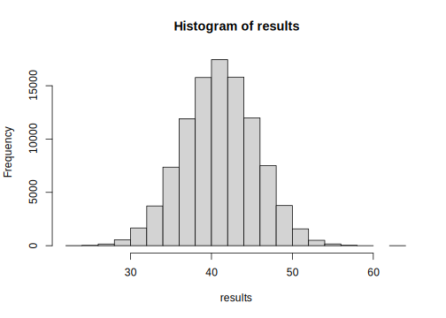
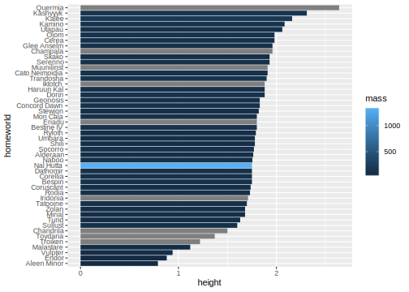

Tag 2 An die Daten
2.1 Wiederholung Tag 1
- Was ergibt
c("12", 13, 14)[2] + 1und warum? - Erstelle einen Vektor
xmit den ganzen Zahlen von 1 bis 10 - Erstelle einen Vektor
y, derxentspricht - Plotte die beiden Vektoren gegeneinander als Punkte
- Lege eine lineare Regressionslinie durch die Daten und füge sie dem Plot hinzu
- Wie können wir mehr über das
linear model-Objekt erfahren?
# c("12", 13, 14)[2] + 1
x <- 1:10
y <- x
plot(x, y)
model <- lm(y ~ x)
abline(model, col = "red")
str(model)
?lm2.2 Workflow einer Datenauswertung

Abb. 2.1: Quelle: Wickham und Grolemund (2017)
2.2.1 Communication!
Rmarkdown ermöglicht es uns, den Code zur Datenauswertung mitsamt den Ergebnissen, Plots und Gedanken dazu an einem Ort zu sammeln und zu dokumentieren. Im Kurs arbeiten wir ebenfalls mit Rmarkdown, da wir so wunderbar die zeigen können, was jede Zeile des Codes tut, da der Output direkt darunter angezeigt werden kann. In RStudio kannst du ein neues Rmarkdown Dokument oben links mit dem “new document” Button.

Eine umfassende Anleitung zu Rmarkdown findest du im Rmarkdown guide, der natürlich selbst ebenfalls in Rmarkdown geschrieben ist (genau wie dieses Buch).
Neue Code-Chunks fügst du mit Ctrl+Alt+I ein. Nutze sie reichlich um den Code in sinnvolle Teile zu strukturieren und nutze Text außerhalb der Chunks um die Gedankengänge bei der Datenauswertung festzuhalten, ähnlich wie dieses Dokument es tut.2
2.3 Daten einlesen
Innerhalb des Tidyverse ist dazu das readr-Package verantwortlich.
Die meisten Funktionen diese Packages beginnen mit read_ oder write_
und die Autovervollständigung zeigt dir alle Optionen auf. Zunächst laden
wir das tidyverse:
library(tidyverse)Ich habe diesem Codeblock noch die Option “```{r, message=FALSE} …” gegeben, damit die Begrüßungsnachricht des tidyverse nicht in unserem Bericht landet.
In einem beliebigen Tabellen-Programm (Excel in unserem Fall) erstellen wir eine Liste mit den Kursteilnehmerinnen und Teilnehmern und halten zusätzlich fest, ob sie in lange (1) oder kurze (0) Haare habe und in welcher Reihe sie sitzen. Wir speichern die Datei im data Ordner unseres RStudio-Projekt-Ordners als “.csv”-Datei.
# Read data with read_csv
students <- read_csv("data/students.csv")Deutsche Excel Versionen nehmen statt Kommata (wie in comma-separated values) jedoch Semikolons (da “,” im Deutschen zur Trennung von Nachkommastellen verwendet wird, im Englischen ist dafür “.” zuständig). In diesem Fall funktioniert jedoch Folgendes:
students <- read_csv2("data/students.csv")Read_csv funktioniert auch mit Links!
read_csv("https://raw.githubusercontent.com/jannikbuhr/dataIntro19/master/data/students.csv")Wir können die Daten auch direkt aus einer Excel-Datei einlesen (auch, wenn csv zu bevorzugen ist).
# <package>:: means we are not loading the whole package
# but rather are just using one function from it
readxl::read_excel("data/students.xlsx")Schreiben von Daten funktioniert analog dazu.
write_csv2(students, "data/students2.csv")2.4 The pipe and dplyr verbs
The dplyr package and the pipe (%>%)
- Einfügen mit Ctrl+Shift+M
f(g(x))
# entspricht
x %>% g %>% fDie wichtigsten dplyr Verben (unsere Werkzeuge zur Transformation
von Daten aller Art):
selectfilterarrangemutatesummarise
Zusätzlich ist noch sehr hilfreich: count,
sowie das Adverb group_by, das für sich alleine
nichts tut aber das Verhalten der Verben verändert.
2.4.1 select
# The following are equivalent
students[ , c("name", "row")]
select(students, name, row)
students %>%
select(name, row)
students %>%
select(-hairlength)2.4.2 filter
# the following 2 are equivalent
students[students$row == 1, ]
students %>%
filter(row == 1)
# show only the students in the first row
# students with short hair?
students %>%
filter(row == 2, hairlength == 1)
students %>%
filter(row == 1 | hairlength == 1)2.4.3 mutate
# convert hairlength from 0 and 1 to "s" and "l"
# Add the length of the name as a new column
students %>%
mutate(hairlength = if_else(hairlength == 0, "s", "l"),
name_length = str_length(name) )Wir benötigen diese neuen Spalten später,
daher geben wir sie nicht nur aus, sondern überschreiben mit dem Ergebnis
die Variable students:
students <- students %>%
mutate(hairlength = if_else(hairlength == 0, "s", "l"),
name_length = str_length(name) )2.4.4 arrange
Wer hat den längsten Namen?
students %>%
arrange(desc(name_length)) %>%
select(name, name_length)## # A tibble: 13 x 2
## name name_length
## <chr> <int>
## 1 Jennifer 8
## 2 Henrik 6
## 3 Kieran 6
## 4 Julius 6
## 5 Sarwar 6
## 6 David 5
## 7 Meret 5
## 8 Laura 5
## 9 Julia 5
## 10 Sarah 5
## 11 Keno 4
## 12 Jan 3
## 13 Jan 32.4.5 count
students %>% count(hairlength, row) %>% arrange(desc(n))## # A tibble: 3 x 3
## hairlength row n
## <chr> <dbl> <int>
## 1 s 1 6
## 2 l 2 4
## 3 s 2 32.4.6 summarise
Was ist die mittlere Namenslänge?
students %>%
summarise(mean_name_length = mean(name_length))## # A tibble: 1 x 1
## mean_name_length
## <dbl>
## 1 5.152.4.7 group_by und summarise
Haben Teilnehmende mit langen Haaren auch im Mittel längere Namen?
student_summary <- students %>%
group_by(row) %>%
summarise(mean_name_length = mean(name_length)) %>%
ungroup()
student_summary## # A tibble: 2 x 2
## row mean_name_length
## <dbl> <dbl>
## 1 1 5
## 2 2 5.29# ungroup is not always necessary but it can be surprising if
# you forget that your data had groups2.5 Was ist Wahrscheinlichkeit?
Es gibt zwei Konzepte von Wahrscheinlichkeit (Probability, \(P\) ):
- Probability inside your head: strength of belief; may vary among people
- Probability „out there“: long-term frequency of an event; can be empirically measured or predicted from a model (Motulsky 2017).
2.5.1 Beispiel:
Kategorische / diskrete Daten: Blind aus einem “Hut” ziehen.
students %>% count(hairlength)## # A tibble: 2 x 2
## hairlength n
## <chr> <int>
## 1 l 4
## 2 s 9students %>% count(row)## # A tibble: 2 x 2
## row n
## <dbl> <int>
## 1 1 6
## 2 2 7# create a "hat" of hairlengths
# with the numbers observed in our course
hat <- students$hairlength# sample / draw from said hat
# the same number of observed long haired in first row
sample(hat, 6)
# Look at the help for sample (default: replace = FALSE)
# How many in this sample have short hair?
draw <- sample(hat, 6)
sum(draw == "s")
# Explanation of for-loop for simulation
for (i in 1:10) {
print(i)
}## Simulation
# set N
N <- 10000
# create empty vector for the sum from each draw
# assign the results in a loop
results <- vector("integer", N)
for (i in 1:N) {
draw <- sample(hat, 6)
results[i] <- sum(draw == "s")
}
# Histogram, Mean, Median
# mean of results
mean(results)## [1] 4.1567# histogram of results
hist(results, breaks = 0:8)
# median
median(results)## [1] 4# Difference between mean and median, their robustness to outliers!
x <- c(1,1.3, 2.1, 1.1, 0, 400)
mean(x)## [1] 67.58333median(x)## [1] 1.2# How surprised should we be? -> Calculate probability for random event
# sum of sum greater than or equal to observed frequency
sum(results >= 6) / length(results)## [1] 0.04942.5.2 P-Values
Eingeführt in den 1920-ern von Ronald Fisher:
“The P value is defined as the probability, under the assumption of no effect or no difference (the null hypothesis), of obtaining a result equal to or more extreme than what was actually observed.” \(-\) (Original: Statistical Methods for Research Workers) (Fisher und Yates 1990)
Nach Konvention: p ≤ 0.05 wird “significant” genannt.
In other words, a p-Value is…
“… a measure of how surprised you should be if there is no actual difference […], but you got data suggesting there is” \(-\) Alex Reinhart (Reinhart 2015)
Wir berechne den exakten P-Value:
# hypergeometric distribution
# note that it calculates cumulative probabilities!
# default: P(X <= x)
1 - phyper(5, m = 9, n = 4, k = 6)## [1] 0.04895105So sieht die hypergeometrische Verteilung für unser Beispiel aus:
barplot(dhyper(x = 0:6, m = 9, n = 4, k = 6), names.arg = 0:6)
2.6 Transfer auf neue Daten
Starwars, ein Datenset enthalten im tidyverse.
2.6.1 Übung
?starwarsAufgaben
- In a new Rmarkdown document:
- Preview the dataset
- Select the columns name, heigth, mass, gender
- Who is the heaviest?
- Convert height from cm to m
- Which gender is taller on average in StarWars?
- Hint: use group_by and summarise
- You might need the argument “na.rm = TRUE” in
mean()
- Simulate drawing 81 characters (or rather genders) from a hat. Repeat this 1000 times.
- How often do you obtain 62 or more male characters?
- How surprised should we be about the data?
- Calculate an exact p-value for the observed frequency
- note: use pbinom instead of phyper to sample WHITH replacement
- Bonus: Create a plot! (any variables that seem interesting)
- Knit the document into a report
2.6.2 Lösungen
starwars# the last step is optional but reduces
# clutter in this document output
starwars %>%
select(name, height, mass, gender) %>%
arrange(desc(mass)) %>%
head(5)## # A tibble: 5 x 4
## name height mass gender
## <chr> <int> <dbl> <chr>
## 1 Jabba Desilijic Tiure 175 1358 masculine
## 2 Grievous 216 159 masculine
## 3 IG-88 200 140 masculine
## 4 Darth Vader 202 136 masculine
## 5 Tarfful 234 136 masculine
Abb. 2.2: Jabba the Hut, Quelle: Wikipedia
starwars <- starwars %>%
mutate(height = height / 100)starwars %>%
filter(!is.na(gender)) %>% # ! means "not"
group_by(gender) %>%
summarise(height = mean(height, na.rm = TRUE))## # A tibble: 2 x 2
## gender height
## <chr> <dbl>
## 1 feminine 1.65
## 2 masculine 1.77starwars %>% count(gender)## # A tibble: 3 x 2
## gender n
## <chr> <int>
## 1 feminine 17
## 2 masculine 66
## 3 <NA> 4Wie wahrscheinlich ist es, bei gleicher Verteilung von Geschlechtern im Universum, allein durch Zufall diesen oder einen höheren Männerüberschuss im starwars Datenset zu erhalten? Die allein zufällige Verteilung ist unsere Nullhypothese \(H_0\).
hat <- c("male", "female")
total_genders <- starwars %>%
filter(!is.na(gender)) %>% nrow()
n_males <- starwars %>%
filter(gender == "male") %>%
nrow()
# This part is an alternative to for loops.
# Instead of the loop, we create a function
# And then apply (map) that function over all
# elements of our vector 1:N
draw_from_hat <- function(hat, n) {
draw <- sample(hat, n, replace = TRUE)
sum(draw == "male")
}
N <- 100000
results <- map_int(1:N, ~ draw_from_hat(hat, total_genders) )
hist(results)
sum(results >= n_males)## [1] 100000Der exakte P-Value wird hier mit pbinom
(also der Wahrscheinlichkeit für binomialverteilte Daten) statt
phyper (Wahrscheinlichkeit für hypergeometrisch verteilte Daten)
ausgerechnet, da wir das Verhältnis der Gender im Universum
für konstant annehmen, selbst wenn wir eines daraus für unser
Datenset gezogen haben. Wir samplen daher mit replace = TRUE
und verwenden die Binomialverteilung.
pbinom(q = n_males - 1,
size = total_genders,
prob = 0.5,
lower.tail = FALSE)## [1] 1Das Ergebnis ist statistisch signifikant bei einem typischen Signifikanzlevel von \(p \leq 0.05\) (\(5~\%\)). Merke an dieser Stelle, dass wir nicht sagen können, etwas bewiesen zu haben, wir können jedoch sagen, dass wir die Nullhypothese (“es gibt keinen Effekt von Gender auf die Auswahl ins Datenset”) ablehnen.
Thus, we reject the null hypothesis.
Für mehr Informationen siehe:
?phyper
?pbinomSowie die unglaublich guten Visualisierungen von Seeing Theory!
2.6.3 Bonus
starwars %>%
filter(!is.na(homeworld)) %>%
group_by(homeworld) %>%
summarise(height = mean(height, na.rm = TRUE),
mass = mean(mass, na.rm = TRUE)) %>%
mutate(homeworld = fct_reorder(homeworld, height)) %>%
ggplot(aes(homeworld, height, fill = mass)) +
geom_col() +
coord_flip()
In diesem Dokument zeige ich der Übersicht halber nicht von allen Chunks den kompletten Output, aber der Code lässt sich leicht mittels des Buttons oben rechts an den Blöcken in die Zwischenablage kopieren und selbst in R/RStudio ausprobieren.↩︎